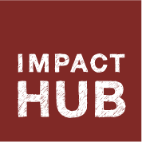

Hey, Urban Geeks, Planners, Civic Hackers, and Community Organizers! Get ready for…
An unconference exploring urban planning, technology, and social change.
Hey, Urban Geeks, Planners, Civic Hackers, and Community Organizers! Get ready for…
An unconference exploring urban planning, technology, and social change.
To hear about future PlanningCamps, follow @PlanningCamp on Twitter.
PlanningCamps in NYC, Oakland and Philly brought together over 300 planners, organizers, civic technologists and government employees for over 90 sessions. Thanks to everyone who brought enthusiasm and community spirit to make the unconferences possible.
We were energized by all three events, and learned a lot that we are using in our ongoing development of Plan In A Box. Try it today to put timely, engaging information about your projects online in a matter of minutes.
Our small team is head down on software development right now, so we've decided to not to proceed with any additional PlanningCamps this year. We'll be at TransportationCamp New England in Cambridge in early April, and at the National APA conference in Atlanta in late April. If you're at either of those events, we hope to see you.
We look forward to bringing PlanningCamp back in 2015. Follow @PlanningCamp to stay informed.
Interested in PlanningCamp, but you're not sure what an unconference is? An unconference is a conference where sessions are programmed and led by the attendees. Unconferences are popular in the tech world because they reflect the culture of the industry – hands-on, flexible, a little casual but very hard working. All the sessions are open for attendees to define, describe, and lead. You'll find the format to be energizing and entertaining. Check out this how-to guide for proposing, formatting, and leading sessions.
Unconferences work best with a diversity of attendees. We work hard to invite a crowd that reflects the variety of people working on urban issues. Past attendees have been a mix of planners, entrepreneurs, students, researchers, and activists.
We had a great time at PlanningCamp Philly on February 1. The Philly planning and civic tech community is awesome–we had 130 people for 33 sessions, ranging from Making Infrastructure Sexy, to How to Keep Philly Millennials Here and Engaged, to a demo of OpenPlans' alpha version of our Plan In A Box software.
You can peruse all the session notes here and here's a Storify and photos.
For the second PlanningCamp, we went west on October 12th to Oakland, CA. We spent the day at Laney College with 100 planners, technologists and activists discussing and brainstorming on a variety of topics including how to erase the stigma of riding public transportation, tech transparency for engagement, city branding, and how to make civic data more available to communities.
The first PlanningCamp was on September 21st, at Pratt Institute in Brooklyn, NY. 100 planners, technologists and activists spent a sunny day in engaging discussions on a variety of topics: 4sq data, engaging immigrant communities, empowerment tech for public housing residents, new tools for open data, resiliency and mapping, and many more.
We're using #plancamp on Twitter for event news and updates.
 OpenPlans' work on PlanningCamp is supported by the John S. and James L. Knight Foundation's Knight News Challenge.
OpenPlans' work on PlanningCamp is supported by the John S. and James L. Knight Foundation's Knight News Challenge.
 PlanningCamp Philly is brought to you by OpenPlans in partnership with Impact Hub.